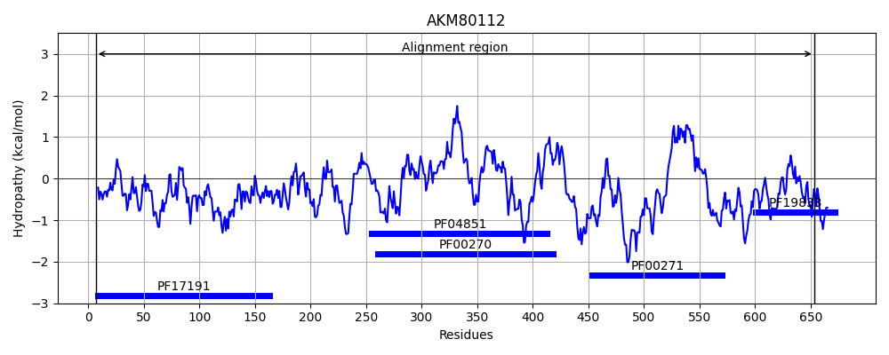
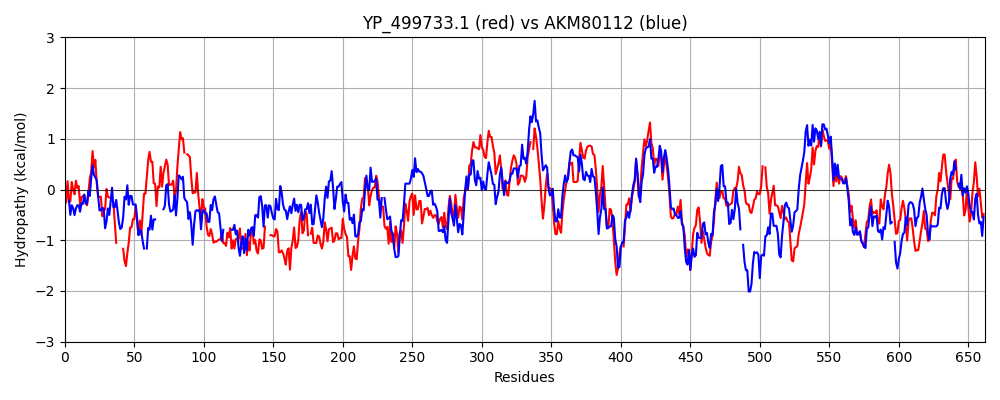

Hit Accession: AKM80112
Hit TCID: 3.A.11.1.5
Hit Description: gnl|BL_ORD_ID|1256 gnl|TC-DB|AKM80112|3.A.11.1.5 putative ATP-dependent DNA helicase [Candidatus Saccharibacteria bacterium GW2011_GWC2_44_17]
Mach Len: 662
e:0.000000
Query TMS Count : 0
Hit TMS Count: 0
TMS-Overlap Score: 0.000000
Predicted Substrates:None
BLAST Alignment:
Score: 1173 , Bit scores: 456 bits, E-value: 3.2e-152, Alignment length: 662, Percentage identity: 42
Query: 13 LLQLKGIGPKKIEVLQQLNIHTVEDLVLYLPTRYEDNT----VIDLNQAEDQSNVTIEGQVYTAPVVAFFGRNKSKLTVHLMVNNIA-VKCIFFNQPYLKKKIELNQTITVKGKWNRVKQEITGNRVFFNSQGTQTQENADVQLE---PVYRIKEGIKQKQIRDQIRQALNDVTIH-EWLTDELREKYKLETLDFTLNTLHHPKSKEDLLRARRTYAFTELFLFELRMQWLNRLEKSSDEAIEIDYDIDQVKSFIDRLPFELTEAQKSSVNEIFRDLKAPIRMHRLLQGDVGSGKTVVAAICMYALKTAGYQSALMVPTEILAEQHAESLMALFGD-SMNVALLTGSVKGKKRKILLEQLENGTIDCLIGTHALIQDDVIFHNVGLVITDEQHRFGVNQRQ-LLREKGAMTNVLFMTATPIPRTLAISVFGEMDVSSIKQLPKGRKPIITTWAKHEQYDKVLMQMTSELKKGRQAYVICPLIESSEHLEDVQNVVALYESLQQ-YYGVSRVGLLHGKLSADEKDEVMQKFSNHEINVLVSTTVVEVGVNVPNATFMMIYDADRFGLSTLHQLRGRVGRSDQQSYCVLIASPKTETGIERMTIMTQTTDGFELSERDLEMRGPGDFFGVKQSGLPDFLVANLVEDYRMLEVARDEAAELIQSG 662
L ++KG+GPK E +HTV DL+ +LP R+ED + + D++ + E +V T PV R ++T +V++ ++ ++FNQPY ++ + G + E N+ + + + VQ + PVYR +G+K + +R + + +T+ E L + + +L + L +H PK+ ED+ RA+ AF ELF + Q LN+ + + E I ++ D V F+ +LPFELT AQ+ + EI +D + + M+RLLQGDVGSGKTVVA + G+Q+ALM PTEILA QHAE+L +L ++V L+ G VKG+ RK L EQ+ NG +D ++GTHALIQ+ V F +G V DEQHRFGV QRQ LL + + ++L MTATPIPR+LA++V+GE+DVS I +LPKGRKPI T ++ ++ E+K GRQAYVIC LI+ + DV++V Y+ LQ + R+GLLHGKL +DEK+ VM +FS+ I++LVSTTVVEVGV+VPNAT +MI +ADRFGLS LHQLRGRVGRS QSYC L+ S ++ +R+ + ++ DGF L+E DL++RGPG+ +G Q G + +A L D +M+ A+ A ++SG
Sbjct: 7 LSKIKGVGPKSAEQFADAGLHTVGDLIQFLPRRHEDFSDTVAIADISPGKKTIRARCE-KVATRPV-----RRGLRITTATLVDDSGKLQAVWFNQPYRATQLAGTEEFFFSGDF-----EFNYNKYQLTNPSVEKVSDMPVQTDRVLPVYRQIKGLKTQLVRKIMSELRPPMTMSPETLPESIVRGERLLSRSEALLGIHFPKTVEDIQRAKERIAFEELFQLLVASQ-LNKHDNAKLEGWHIPFNKDVVADFVAKLPFELTGAQRRAAWEIIQDFERQVPMNRLLQGDVGSGKTVVAGLAARQAAHHGFQTALMAPTEILASQHAETLSSLLAPFGVSVGLIMGGVKGQARKTLYEQIANGAVDVVVGTHALIQEKVQFKKLGFVAIDEQHRFGVKQRQQLLAKSEHLPHLLAMTATPIPRSLALTVYGELDVSIINELPKGRKPIDTRLWSPNSRAQLYEKIDIEIKTGRQAYVICSLIDENPD-NDVKSVQEEYKKLQNSVFKHRRIGLLHGKLKSDEKEAVMAQFSSGSIDILVSTTVVEVGVDVPNATIIMIENADRFGLSQLHQLRGRVGRSSHQSYCYLVMSDSSKPS-QRLKAIEKSNDGFYLAEVDLQLRGPGEIYGRSQHGALNLQIATLA-DTKMIARAQQAAKSFVESG 653 | Protein Hydropathy Plots: |
|---|
 |  |
Pairwise Alignment-Hydropathy Plot:
|
|---|
|  |